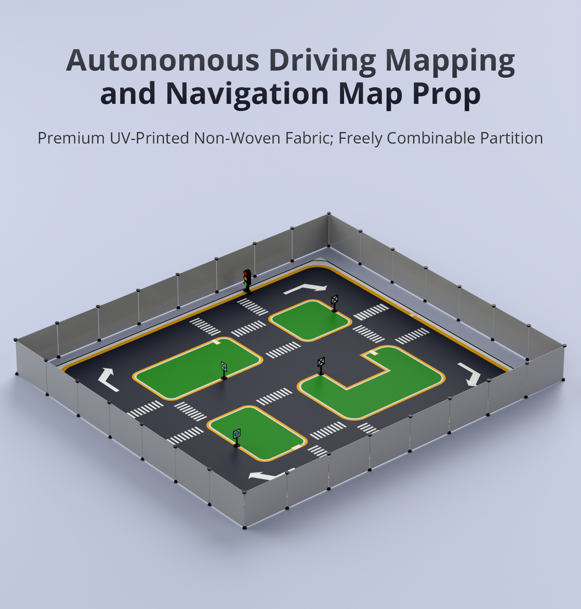

沙盘环境认知与建图导航
先认识沙盘上的每一条交通语义，再让小车 C1 用激光 SLAM 遍历全场、闭环保存 slam_map，用 Nav2 完成点到点巡路，最后回到地图上给路口、灯口、车位打语义标注——验收标准：地图闭环无重影 + 点到点 3 次到位 + 语义标注 ≥6 处。
01本节目标
- 说出沙盘典型元素及其交通语义：车道线（约 40cm 宽）、直角弯、T 形/十字路口、红绿灯模型、斑马线、平行车位/侧方车位、四类交通标志牌、行人模型、高对比识别线。
- 讲清激光 SLAM 三件事：怎么扫（/scan 扫描匹配）、怎么闭（回环校正）、怎么存（slam_map 栅格地图）。
- 独立跑通
car1_slam/slam.launch.py遍历建图并保存slam_map，在 RViz2 检查路口无重影。 - 用
car1_navigation/navigation.launch.py完成 Nav2 点到点巡路，会设 2D Pose Estimate 初始位姿。 - 在地图上完成 ≥6 处沙盘语义标注（路口/灯口/车位/斑马线），形成后续实验的点位底座。
- 牢记安全铁律：沙盘边缘 0.5m 内视为安全边界，小车低速起步（≤0.15m/s），先空场后巡路。
02核心原理：沙盘即结构化城市，SLAM 把它变成栅格地图
把沙盘想像成一座"微缩城市"的施工图纸：车道线是道路中轴，路口是节点，红绿灯与标志牌是规则牌，车位是终点站。小车要在这座城市里活下来，先得把"图纸"装进脑子里——这幅图纸就是 slam_map 栅格地图。激光雷达每转一圈吐出一帧 /scan，slam_toolbox 做扫描匹配：拿当前帧与已有地图对齐，能对上就推出自身位姿、顺手把新墙面刷进地图；走过回头路时触发回环校正——发现"这面墙我来过"，把累计漂移一把拉回，路口才不会画成两个路口。
沙盘元素 → 地图语义 → 课程用途（典型规格，以现场沙盘实际元素为准）
| 沙盘元素 | 典型规格 | 在本课程中的用途 |
|---|---|---|
| 车道线 / 高对比识别线 | 车道宽约 40cm，黑黄高对比 | EXP-03 视觉巡线的检测对象，建图时贴地特征对激光反射弱、靠边界墙定图 |
| 直角弯 ×4、T 形/十字路口 | 路口为规则几何，墙沿笔直 | 建图回环的关键路标；EXP-03 路口状态机的执行场所 |
| 红绿灯模型 | 立式三色灯，高约 24cm | EXP-02 三态识别 → EXP-03 红灯停绿灯行 |
| 斑马线人行横道 | 白条纹横跨车道 | EXP-03 礼让行人触发区；EXP-04 综合路测扣分项 |
| 平行车位 / 侧方车位 | 标线框约 45×35cm | EXP-04 车位检测与轨迹泊车目标 |
| 交通标志牌（直行/转向/停车/注意行人） | 牌面约 8×8cm、杆高约 16cm | EXP-02 四类标志检测 → EXP-04 按标志改道 |
| 行人模型 | 立牌式，置于斑马线端 | EXP-03 斑马线礼让判据 |
地图有了，Nav2 负责"怎么走"：AMCL 粒子滤波拿实时 /scan 与 slam_map 匹配求出小车在图上的坐标（map→base_link），全局规划器（A*/DWA 层级）在代价地图上铺出路线，局部控制器沿路纠偏，把结果化成 /cmd_vel 速度流给麦克纳姆轮底盘——于是"走到那个路口"就成了一次点击。语义标注则是往这张图上贴标签：把 map 坐标系里的路口、灯口、车位写进一个 yaml 点位表，EXP-02~04 全部按名取点，不再传裸坐标。
03硬件与场景
| 上电前检查 | 标准 | 不达标后果 |
|---|---|---|
| 电量 | >50%，低于 30% 立即回充 | 建图半途掉电，slam_map 损坏重跑 |
| 雷达话题 | ros2 topic echo /scan --once 有数据 | slam_toolbox 无输入，map 全黑 |
| 沙盘清场 | 移走散落物，行人模型归位 | 动态障碍被刷进地图成"鬼墙" |
| 安全边界 | 沙盘四周 0.5m 无人踩踏区 | 小车冲沿、人员绊倒 |

04操作步骤
对照第 02 节表逐个认元素 → 划安全边界 → 上电自检
slam.launch.py + RViz2，遥控低速遍历沙盘闭环一圈
保存 slam_map，检查路口无重影、车位框完整
navigation.launch.py 加载地图 → 设初始位姿 → 3 个目标点
RViz2 Pick Point 记录路口/灯口/车位 → 写入点位 yaml
- 遍历策略：先沿外环顺时针走一圈，再穿中轴支路，最后回到出发点触发回环——直角弯外侧 90° 缓转，速度 ≤0.15m/s，起步前让轮子转半圈再落，避免麦克纳姆轮原地打滑刷歪地图。
- 闭环检查：RViz2 中回到起点时，起始墙面与返场墙面应重合成一条线；出现"双墙"说明漂移大，重新建图并放慢过弯速度。
- 保存地图：执行第 05 节命令保存
slam_map.yaml + slam_map.pgm，先在 RViz2 反复加载确认再往下走。 - 点到点巡路：加载地图启动导航后必设 2D Pose Estimate，依次下发 3 个目标点（A 角直角弯、B 点灯口前、C 点车位前），每个点连续 3 次到位算通过。
- 语义标注：用 RViz2 的 Publish Point 读坐标，按
name: {x, y, yaw}格式写入点位 yaml，至少标注 4 路口 + 1 灯口 + 1 车位。 - 留痕：保存地图截图、3 次到位截屏与点位 yaml，构成本实验验收证据。
05关键命令
命令风格与《培训方案》xlsx 一致；包名、地图名沿用 car1_slam / slam_map / car1_navigation 约定。
# ① 预检：雷达与底盘话题在线 ros2 topic echo /scan --once ros2 topic list | grep -E "scan|cmd_vel" # ② 启动激光 SLAM 建图（终端1）+ RViz2 观察（终端2） ros2 launch car1_slam slam.launch.py rviz2 -d ~/car1_ws/src/car1_slam/rviz/slam.rviz # ③ 遥控遍历沙盘闭环（低速起步！）+ 查看 TF 树确认 frame 完整 ros2 run teleop_twist_keyboard teleop_twist_keyboard ros2 run tf2_tools view_frames # ④ 保存地图为 slam_map（遍历闭环并回到起点后执行） ros2 run nav2_map_server map_saver_cli -f slam_map # ⑤ 加载 slam_map 启动 Nav2 + AMCL 定位 ros2 launch car1_navigation navigation.launch.py map:=slam_map # ⑥ RViz2 设初始位姿（2D Pose Estimate）后再下发目标点 ros2 action send_goal /navigate_to_pose nav2_msgs/action/NavigateToPose \ "{pose: {header: {frame_id: map}, pose: {position: {x: 1.2, y: 0.8}}}}" # ⑦ 监控定位质量：粒子云应收敛成一撮，TF 持续刷新 ros2 topic echo /amcl_pose --once ros2 run tf2_ros tf2_echo map base_link
06原理动画：遍历建图与 Nav2 点到点
07互动实验：红绿灯配时模拟器
配时公式（本模拟器采用）：南北向 红 3s → 绿 25s → 黄 5s，东西向 绿 13s → 黄 2s，周期 48s。把滑杆推到黄灯切换前 2 秒再看车辆位置——"能否在停止线前停下"决定黄灯该走还是该停，这正是 EXP-03 路口状态机的判据原型。
08常见问题
09拓展阅读
- slam_toolbox 官方文档（ROS 2 Wiki）：mapping / localization 两种模式的参数表——对照本课 slam.launch.py 看 resolution、max_laser_range 怎么影响 40cm 车道的建图精度。
- Nav2 概念页：global planner 与 controller 的分工、代价地图膨胀层——理解"目标点为什么不能压线放"。
- tf2_tools view_frames：每次导航会话开始先导一次 TF 树，map→odom→base_link 断链是 80% 导航怪病的根源。
- 教学沙盘选型：淘宝「ROS机器人无人驾驶沙盘」（id=696594369848，¥899，塔克创新品牌店）；同类规格可参考 Hiwonder 自动驾驶地图产品页（本课抓图来源）。
- 本课程索引：CASE-05 课程目录，下一实验将把灯口与标志牌变成话题数据。